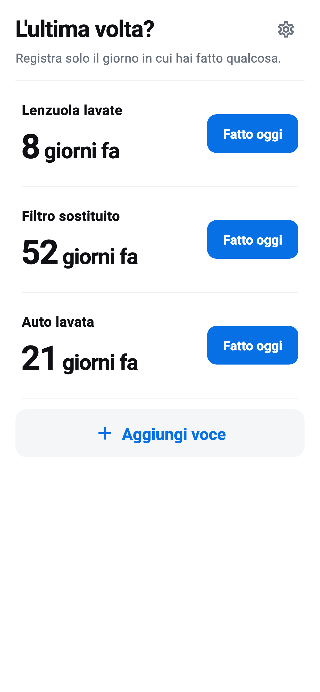

Dai un nome
Aggiungi una pulizia, sostituzione o cura inserendo solo il nome.
L'ultima volta? · iOS / Android
Registra pulizie, sostituzioni e cura. Scopri i giorni trascorsi.
Disponibile su iPhone, iPad e Android
Scopri come funziona
COME FUNZIONA
Aggiungi una pulizia, sostituzione o cura inserendo solo il nome.
Fatto oggi salva subito. Se sbagli, puoi annullare immediatamente.
Nella schermata iniziale vedi i giorni trascorsi. Apri una voce per cronologia e media.
SOLO L’ESSENZIALE
Nessun promemoria o frequenza consigliata. Le medie riflettono solo le tue registrazioni.
Voci e cronologia sono salvate sul dispositivo. Le registrazioni funzionano offline; gli annunci usano Internet.
I backup del sistema possono includere i dati dell’app; il ripristino non è garantito.
Leggi l’informativa sulla privacy →